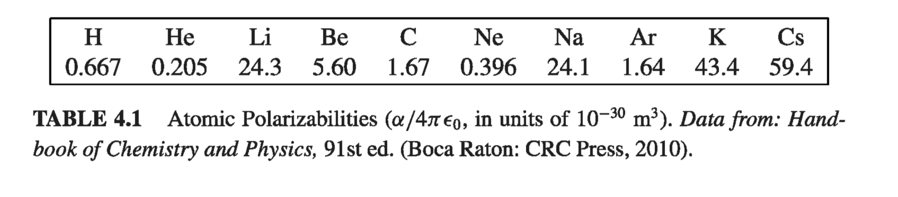

4.1: Polarization
4.1.1: Dielectrics
This chapter is all about what happens to an electric field when you take matter into account. Matter, of course, comes in many varieties - phase, composition, state, etc. - and depending upon which type of matter we're dealing with, the electrostatic field response can be very different. Nevertheless, most everyday objects belong (at least, to good approximation) to one of two large classes: conductors and insulators (or dielectrics). We have already gone over what happens to an electrostatic field in a conductor; the "unlimited" free charges within a conductor distribute themselves through the material so as to form an equipotential. In practice, this usually means that many electrons (one or two per atom, in a typical metal) are not associated with a particular nucleus, but roam around at will. In dielectrics, by contrast, all charges are attached to specific atoms or molecules - they cannot escape their leash, and can only move a bit within the atom or molecule. Such microscopic displacements are not as dramatic as the wholesale rearrangement of charge in a conductor, but their cumulative effects account for the characteristic behavior of dielectric materials. There are actually two principal mechanisms by which electric fields can distort the charge distribution of a dielectric atom or molecule: stretching and rotating. In the next two sections I'll discuss these processes.
4.1.2: Induced Dipoles
Say we have a totally neutral atom and place it in an electric field E? What happens? At first guess, you might think "Nothing at all! The atom is not charged, so the field has no effect on it." That's incorrect. Although the atom as a whole is electrically neutral (just like the dipoles we looked at in the last chapter), there is a positively charged core (the nucleus) and negatively charged electron(s) surrounding it. These two regions of charge within the atom are influenced by the field: the nucleus is pushed in the direction of the field, and the electrons the opposite way. In principle, if the field is large enough, it can pull the atom apart completely, "ionizing" it (the substance then becomes a conductor). With less extreme fields, however, an equilibrium is soon established, for if the center of the electron cloud does not coincide with the nucleus, these positive and negative charges attract one another, and that holds the atom together. The two opposing forces - E pulling the electrons and nucleus apart, and their mutual attraction drawing them back together - reach a balance, leaving the atom polarized, with plus charge shifted slightly one way, and minus the other. The atom now has a tiny dipole moment p, which points in the same direction as E. Typically, this induced dipole moment is approximately proportional to the field (as long as the latter is not too strong): The constant of proportionality is called atomic polarizability. Its value depends on the detailed structure of the atom in question. Table 4.1 lists some experimentally determined atomic polarizabilities.

Example 4.1
A primitive model for an atom consists of a point nucleus (+q) surrounded by a uniformly charged spherical cloud (-q) of radius a (Fig 4.1). Calculate the atomic polarizability of such an atom.

For molecules the situation is not quite so simple, because frequently they polarize more readily in some directions than in others. Carbon dioxide (Fig 4.3), for instance, has a polarizability of when you apply the field along the axis of the molecule, but only for fields perpendicular to this direction. When the field is at some angle to the axis, you must first resolve it into parallel and perpendicular components, and multiply each component by the pertinent polarizability

In this case, the induced dipole moment may not even be in the same direction as E. And is relatively simple, as molecules go, since at least the atoms arrange themselves in a straight line; for a completely asymmetrical molecule, is replaced by the most general linear relation between E and p: The set of nine constants constitute the polarizability tensor for the molecule. Their values depend on the orientation of the axes you use, though it is always possible to choose "principal" axes such that all off-diagonal terms vanish, leaving just three nonzero polarizabilities.
4.1.3: Alignment of Polar Molecules
The neutral atom discussed in section 4.1.2 had no dipole moment to start with - p was entirely induced by the applied field. Some molecules have built-in, permanent dipole moments. In the water molecule, for example, the electrons tend to cluster around the oxygen atom (Fig 4.4), and since the molecule is bent at , this leaves a negative charge at the vertex and a positive charge on the opposite side. (The dipole moment of water is unusually large: ; in fact, this is what accounts for its effectiveness as a solvent.) What happens when such molecules (called polar molecules) are placed in an electric field?
If the field is uniform, the force on the positive end, , exactly cancels the force on the negative end, (Fig 4.5). However, there will be a torque:

Thus a dipole in a uniform field experiences a torque
Notice that N is in such a direction as to line p up parallel to E; a polar molecule that is free to rotate will swing around until it points in the direction of the applied field.
If the field is nonuniform, so that does not exactly balance , there will be a net force on the dipole, in addition to the torque. Of course, E must change rather abruptly for there to be significant variation in the space of one molecule, so this is not ordinarily a major consideration in discussing the behavior of dielectrics. Nevertheless, the formula for the force on a dipole in a nonuniform field is of some interest: where represents the difference between the field at the plus end and the field at the minus end. Assuming the dipole is very short, we may use Eq 1.35 to approximate the small change in E and therefore For a "perfect" dipole of infinitesimal length, gives the torque about the center of the dipole even in a nonuniform field; about any other point, .
4.1.4: Polarization
In the previous two sections, we have considered the effect of an external electric field on an individual atom or molecule. We are now in a position to answer (quantitatively) the original question: What happens to a piece of dielectric material when it is placed in an electric field? If the substance consists of neutral atoms (or nonpolar molecules), the field will induce in each a tiny dipole moment, pointing in the same direction as the field. If the material is made up of polar molecules, each permanent dipole will experience a torque, tending to line it up along the field direction. (Random thermal motions compete with this process, so the alignment is never complete, especially at higher temperatures, and disappears almost at once when the field is removed.)
Notice that these two mechanisms produce the same basic result: a lot of little dipoles pointing along the direction of the field - the material becomes polarized. A convenient measure of this effect is which is called the polarization. From now on we shall not worry much about how the polarization got there. Actually, the two mechanisms I described are not as clear-cut as I tried to pretend. Even in polar molecules there will be some polarization by displacement (though generally it is a lot easier to rotate a molecule than to stretch it, so the second mechanism dominates). It's even possible in some materials to "freeze in" polarization, so that it persists after the field is removed. But let's forget for a moment about the cause of the polarization, and let's study the field that a chunk of polarized material itself produces. Then in section 4.3 we'll put it all together: the original field, which was responsible for P, plus the new field, which is due to P.